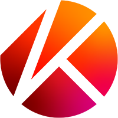
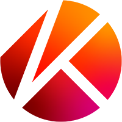
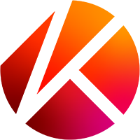
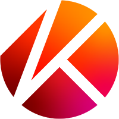

Non Fungible Token atau NFT adalah salah satu aset investasi yang termasuk ke dalam hal mata uang kripto. NFT sendiri adalah aset digital yang bisa digunakan sebagai bukti kepemilikan barang yang dapat dibeli dengan mata uang kripto. NFT meliputi berbagai bidang seperti karya seni, video klip, musik, game dan lain sebagainya.

Pada 3 Mei 2014, Kevin McCoy mencetak token “Quantum” yang tidak dapat dipertukarkan, jauh sebelum pasar seni kripto atau CryptoArt Market meledak. Quantum adalah gambar pixel persegi delapan yang diisi dengan lingkaran, busur, atau bentuk lain yang berbagi di pusat yang sama. CryptoArt atau NFT menggabungkan dunia seni media berbasis waktu yang didukung teknologi Blockchain. Cara kerja NFT terdesentralisasi, sehingga menjadikannya otentik. NFT mewakili aset digital apa pun yang ada di blockchain Ethereum, sehingga membuatnya langka, dapat dibuktikan, dan berharga. Munculnya NFT telah menciptakan media baru bagi seniman dan kreator untuk memamerkan karya atau koleksinya. Pada gilirannya, sebuah revolusi membuka jalan bagi para seniman untuk membuat dan memonetisasi karya mereka. Aset NFT dapat berupa seni digital, koleksi, kreasi musik, maupun sinergi antara ketiganya. NFT juga bisa berupa komposisi yang sama sekali baru dan belum dijelajahi. Hal itu membuat kreator dan seniman NFT harus inovatif dan adaptif terhadap perubahan. CryptoArt diprakarsai oleh fenomena budaya seperti CryptoPunks, Rare Pepe, dan CryptoKitties. Karya-karya seni itu menjadi terkenal karena viral.
Gagasan NFT muncul dari “Colored Coin” yang dikeluarkan di blockchain Bitcoin pada 2012-2013. Colored Coin adalah token yang mewakili aset dunia nyata di Blockchain. Koin ini bisa digunakan untuk membuktikan kepemilikan aset apa pun: logam mulia, mobil, real estat, ekuitas, dan obligasi.
Pada tahun 2014, Robert Dermody, Adam Krellenstein, dan Evan Wagner mendirikan Counterparty. Counterparty adalah platform keuangan peer-to-peer dan terdistribusi dan protokol internet open-source yang dibangun menggunakan Blockchain Bitcoin. Platform ini mengizinkan pembuatan aset dan memiliki pertukaran yang terdesentralisasi. Sehingga memberikan cara bagi pengguna untuk membuat mata uang mereka sendiri yang dapat diperdagangkan.
Pada April 2015, Counterparty bermitra dengan tim pengembang Spells of Genesis. Mereka tidak hanya jadi pelopor mengeluarkan aset dalam game ke blockchain melalui Counterparty, tetapi juga termasuk yang pertama merilis ICO (Initial Coin Offering). Sehingga dalam pengembangan Counterparty bisa memperkenalkan mata uang dalam game mereka sendiri yang disebut BitCrystals.
Pada Agustus 2016, tren baru mulai bermunculan. Counterparty bekerja sama dengan Force of Will, pemain kartu perdagangan populer. Mereka meluncurkan kartu mereka di platform Counterparty. Di belakang Pokemon, Yu-Gi-Oh, dan Magic, Force of Will adalah permainan kartu peringkat ke-4 di Amerika Utara. Masuknya mereka ke dalam ekosistem, di mana mereka tidak memiliki pengalaman blockchain atau Cryptocurrency sebelumnya, menandakan nilai penempatan aset tersebut di Blockchain.
Pada 2016, meme memasuki blockchain. Lalu, Oktober 2016 Meme mulai masuk ke platform Counterparty. Orang-orang mulai menambahkan aset ke meme tertentu yang disebut “Rare Pepes”. Rare Pepes adalah meme yang menampilkan karakter katak yang telah memperoleh basis penggemar intens selama bertahun-tahun. Yang awalnya merupakan karakter komik bernama Pepe the Frog, kini terus menjadi salah satu meme paling populer. Pada awal 2017, ketika Ethereum semakin naik daun, Rare Pepes mulai diperdagangkan di sana juga. Pendiri Portion, Jason Rosenstein, bersama Louis Parker, melelang Rare Pepes di Rare Digital Art Festival pertama. CryptoArt lahir dengan Dompet Rare Pepes dan ini adalah pertama kalinya pembuat konten di seluruh dunia dapat mengirimkan dan menjual karya seni mereka sendiri.
Saat perdagangan Rare Pepes meningkat, John Watkinson dan Matt Hall, pencipta Larva Labs, menciptakan karakter unik yang diciptakan di blockchain Ethereum. Karakter itu dibatasi hingga 10.000. Nama Cryptopunks dirujuk ke eksperimen dengan Bitcoin pada 1990-an dan dapat digambarkan sebagai hibrida ERC721 dan ERC20. ERC20 adalah standar token Ethereum yang paling umum. Token ini memiliki aturan yang memungkinkan token untuk berinteraksi satu sama lain. Sementara itu, ERC721 bertujuan untuk menjadi standar NFT di Blockchain Ethereum. ERC721 membantu pelacakan kepemilikan dan pergerakan token individu. NFT CryptoKitties mulai beroperasi menggunakan ERC721. CryptoKitties adalah game virtual berbasis blockchain yang memungkinkan pemain untuk mengadopsi, mengembangbiakkan, dan memperdagangkan kucing virtual menggunakan Ethereum. Popularitas game ini meledak dan mendapat slot berita utama di CNBC dan Fox News.